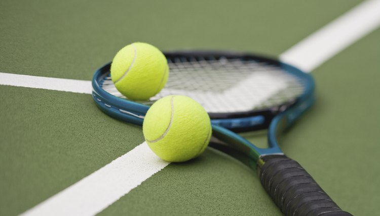

INDIAN TENNIS TEAM
Tennis is a racket sport that is played either individually against a single opponent (singles) or between two teams of two players each (doubles). Each player uses a tennis racket that is strung with cord to strike a hollow rubber ball covered with felt over or around a net and into the opponent's court. The object of the game is to manoeuvre the ball in such a way that the opponent is not able to play a valid return. The player who is unable to return the ball validly will not gain a point, while the opposite player will. Tennis is an Olympic sport and is played at all levels of society and at all ages. The sport can be played by anyone who can hold a racket, including wheelchair users. The modern game of tennis originated in Birmingham, England, in the late 19th century as lawn tennis. It had close connections both to various field (lawn) games such as croquet and bowls as well as to the older racket sport today called real tennis.[
When it was initially devised in 12th century northern France, the sport that is today known as tennis did not look very similar to its modern variant that is still played today. It did not use the racket, but instead, a ball was hit with the open palms of the hand. After being adopted by the royalties and nobles of France, England, and several other European territories, the “royal tennis” (known in France as “ jeu de paume” - the game of palms) transformed into a sport that much more resembled modern tennis when simple rackets were adopted in the 16th century.